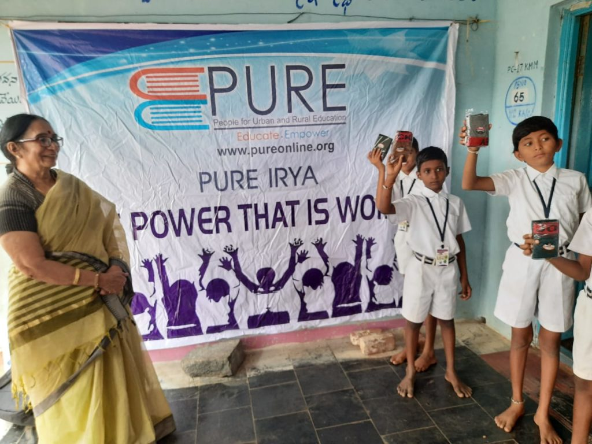
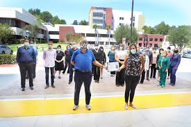
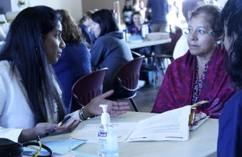
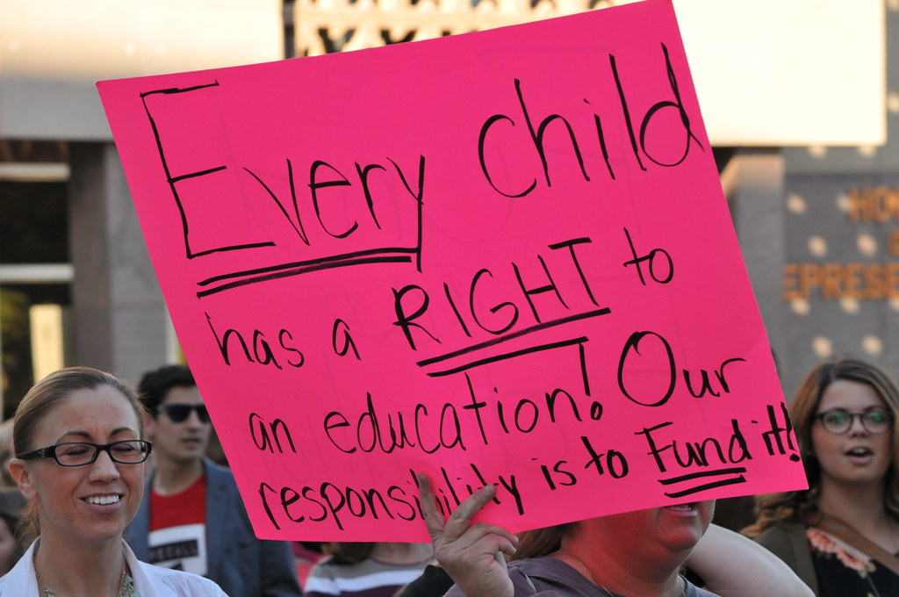
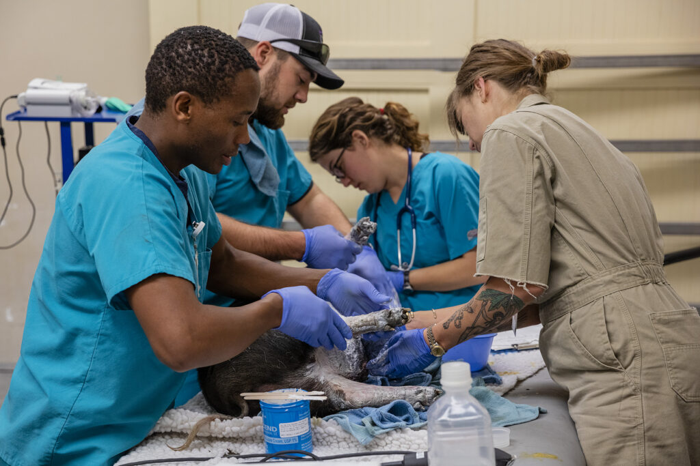
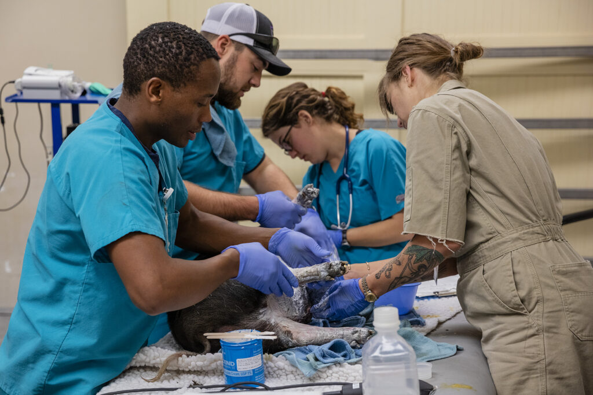
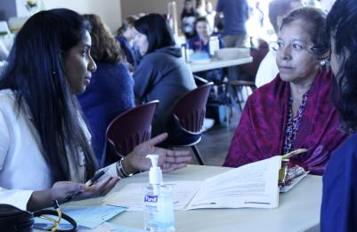
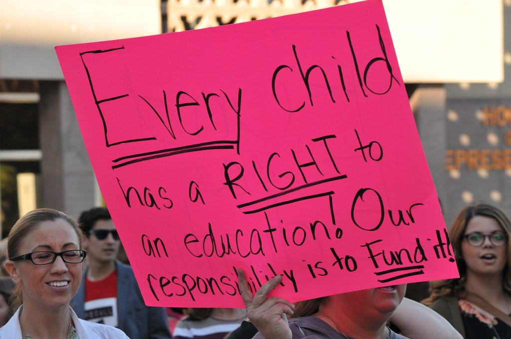
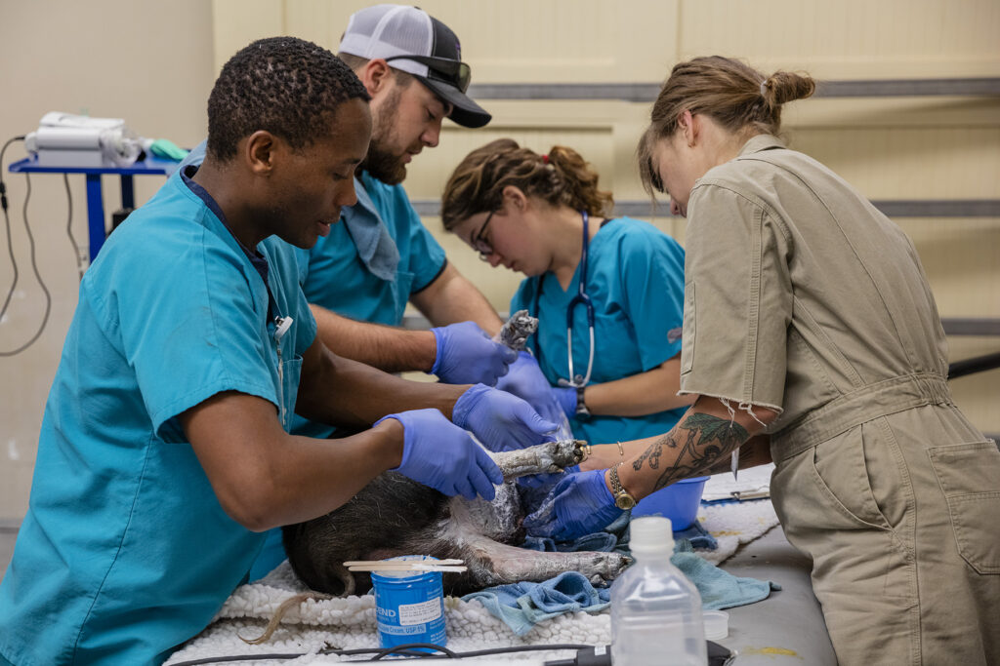

Jhanvi Dyavarshetty
I am Jhanvi Dyavarshetty and I am majoring in Pre-business at the University of California Riverside. I am interested in concentrating in finance or marketing in the future. I have volunteered and interned in various organizations to become better exposed to the business administration field. UCR gave me the chance to explore the business and become interested in different aspects of this field. I joined business clubs and met people who shared similar interests as myself. I was able to create both professional and personal connections through these opportunities. My goal is to grow professionally by learning the expertises
I am grateful for having the opportunity to direct the People for Urban and Rural Education of the Santa Clarita, California Youth Branch. This organization allowed me to learn leadership skills as well as learning how to manage a team of individuals. I learned marketing strategies by managing the social media initiative to spread awareness about education as well as arranging fundraising events to raise money to better schools in India. Our intention was to spread awareness about how education is perceived in third-world countries and how we as a society who are privileged can help them.
I was so grateful to find my passion for business during my internship at the Henry Mayo Newhall Hospital Outpatient Surgery Center in Valencia, California. I learned about the business applications in the medical field which helped me discover what I wanted to do in the future. Experiencing both a medical and business environment made me realize my passion in the field. I gave the patients food and water at the beginning of each shift as well as expressed gratitude to my mentors and the health care professionals by making thank you cards. I also completed discharge papers and organized the patients’ cards through an electronic software, which the health administration team taught me how to do. During these tasks, I noticed how the healthcare facility oversaw the operation of patient care. I was able to observe the hospital management in the environment I worked in.
These opportunities developed my interest in volunteering and helping better society with a group of people who had the same intention. They increased my interest in business and pushed me to join clubs and learn more business-related skills in college. I am currently renewing the discontinued club, Women in Business, at my university with a group of friends. I am the Internal Vice President of the club and our initiative is to encourage women in Business Administration. My responsibilities in this position are to oversee and help build strong relations while broadening the profits and production of the club, I am also part of the American Marketing Association where I learned more about my passion in the business field. I learned many leadership skills such as problem-solving, becoming an articulate communicator, and adapting to different environments. Along the way of this journey, I overcame obstacles independently which I wouldn’t have been able to before these experiences I encountered.
Experience
Director of Santa Carita Youth Branch PURE
• Managed the social media initiative to spread awareness about education in schools
• Arranged fundraising events to raise money to better schools in India
• Recruited 10 members to expand our team
Volunteer
• Gave patients food and water at the beginning of each shift
• Completed discharge papers and organized the patients’ charts
• Connected and transferred phone lines to patients and staff members
• Expressed gratitude to the health care professionals by making thank you cards
Volunteer
• Worked with healthcare professionals in giving annual physicals to families without health insurance
Education
University of California Riverside
Valencia High School
Portfolio




 

 
